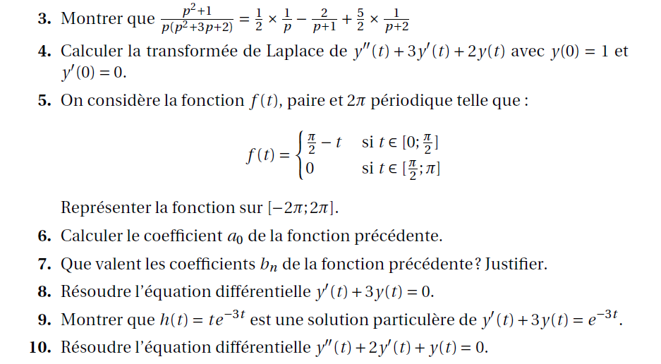

1TSELT
Devoirs maison :
Corrigé du dm sur les intégrales:
Corrigé
Lois de probabilités à rendre pour le 24/04:
Classe Dekerf Ducatillon Dufour Flahaut Hammadi Herbaut Isaert Laschamps Lecocq Lienard Loucheux Naili Neveu Prouvost Tsabit Vonic Wallerand Vos
Corrigé du dm sur les lois de probabilités:
Corrigé
Tableau des notes Notes
Lien pour un calculateur de loi de probabilité : Site de l'IREM de la Réunion
2TSELT
Devoirs maison :
Corrigé du dm sur les équations différentielles : Corrigé
Corrigé du dm sur les probabilités : Corrigé
Devoirs de préparation au contrôle continu du second semestre :
Premier devoir à rendre pour la première semaine des vacances. Trois erreurs à corriger : la première à la question 3, la deuxième à la question 5 et la derniére à la question 9 :
 Belaiche Blaise Djamaloudine Dupas Dupont Farina Guérin Guyen Janowski Lecanu Marfil Pruvost Wywijas Zerradi
Deuxième devoir à rendre pour le 15 mai 2020.
Belaiche Blaise Djamaloudine Dupas Dupont Farina Guérin Guyen Janowski Lecanu Marfil Pruvost Wywijas Zerradi
Tableau des notes Notes
Lien pour un calculateur de loi de probabilité : Site de l'IREM de la Réunion
Résumé :
Résumé des deux années
TSTI2D
Devoirs maison :
Exemple de corrigé du dm sur les intégrales : Corrigé
Exemple de corrigé du dm sur la loi binomiale et la loi normale : Corrigé
Exemple de corrigé du dm sur la loi exponentielle et la loi uniforme : Corrigé
Exemple de corrigé du dm de synthèse 1 ( celui des vacances ) : Corrigé
Devoirs maison de révision pour le contrôle continu :
Premier devoir à rendre pour la première semaine des vacances. Deux erreurs à corriger. A la question 4 et 5, il faut lire dériver et non pas calculer. A la question 6, dans l'exponentielle il faut rajouter un x dans l'exponentielle.
Beaumont Bour Capon Carré Cauchie Chmara Degardin Delplanque Derouich Devogelare Eersteling Emric Fourneron Giambra Jouglet Kaczmarek Lecleire Leroy-Gravelle Mortelette Neuman Pie Pouchain Poulain Robillard Stalmarski Willekens
Deuxième devoir de synthèse à rendre pour le 15/05/2020.
Beaumont Bour Capon Carré Cauchie Chmara Degardin Delplanque Derouich Devogelare Eersteling Emric Fourneron Giambra Jouglet Kaczmarek Lecleire Leroy-Gravelle Mortelette Neuman Pie Pouchain Poulain Robillard Stalmarski Willekens
Tableau des notes Notes
TSTMG
Devoirs maison :
Corrigé du dm sur les révisions pour le bac blanc : Corrigé
Corrigé du dm sur la correction du bac blanc : Corrigé
Corrigé du dm sur les probabilités : Corrigé
Devoirs maison de révision :
Devoir pour le 30 Avril
Anceaux Barbot Bouarif Carin Coghe Deshayes Dhulster Gallet Gennin Hannicote Kamp Langlet Lefebvre Lenoir Louchez Mir Noel Savary Smal Vernagut
Devoir pour le 07 Mai
Anceaux Barbot Bouarif Carin Coghe Deshayes Dhulster Gallet Gennin Hannicote Kamp Langlet Lefebvre Lenoir Louchez Mir Noel Savary Smal Vernagut
Tableau des notes Notes